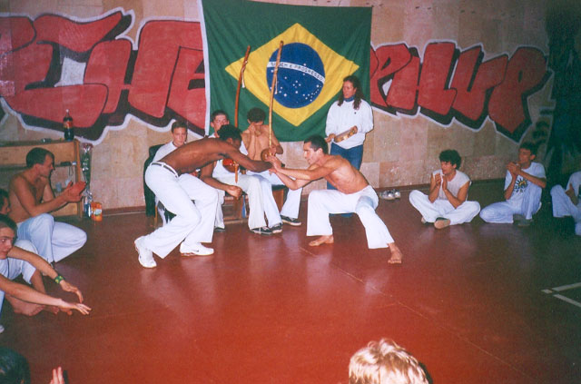
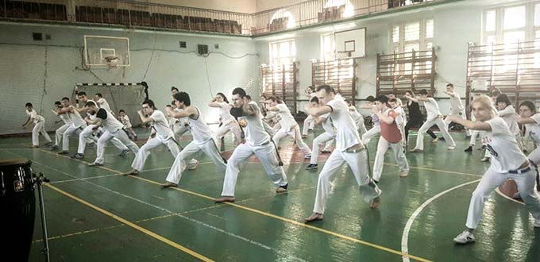

The unofficial beginning of Capoeira in Ukraine dates back to 1993 when the movie "Only the Strong" was first released. At the same time, the first Capoeira group was established in Kyiv, led by coach Vitaliy Kobalchinsky, who, in the absence of a master, was teaching based solely on the techniques from this movie.
In 2000, Professor Rui, at the time, arrived in Ukraine, and following the first seminar, the Kyiv group officially joined the Senzala school, becoming the first official Capoeira school in Ukraine.  second seminar was held in 2002. However, shortly after that, Vitaliy decided to leave Senzala and join the Expressão Paulista school under the guidance of Mestre Marcelo. Some of his students, including Contra-Mestres Anisim, Mykola, and Igor, were against this sudden decision. Not wanting to abandon their master and Senzala, the young men were forced to leave the group.
After the group's disbandment, Igor managed to contact Rui after about half a month, and in 2004, the first seminar was held with a new composition of the Ukrainian Senzala school. During this seminar, Anisim and Mykola received their apelidos (nicknames), and a Senzala branch was established in Odessa under the guidance of Maxim Chechetov. In 2004, Igor's group celebrated its third anniversary. Starting in 2004, the development of the Senzala group in Ukraine gained enormous momentum. They participated in numerous performances, parties, and even presented a new Nike collection. In addition to Capoeira, they also showcased Maculele, and the group began collaborating with the famous showman Andrey Dzhezhula. Senzala gained media attention, with TV shows, articles, and newspaper features.
In April 2005, Igor and Andrey Molev attended Batizado in Denmark, where Andrey received the orange cord, and Igor received the gray cord, becoming the first monitor in Ukraine. Also, in the spring, two of Rui's students, Rasmus and Troels, came to Kyiv to conduct the second seminar. In the fall of 2005, all three instructors from Mestre Rui, namely Rasmus, Troels, and Vida, came to Ukraine. However, the most significant event of these years was the first Batizado, held in May 2006, where Anisim and Mykola received their gray cords. Afterward, Maxim Koryak created a video that was later shown on television and used as an advertisement in McDonald's.
In the summer of 2006, the Kyiv Senzala group was invited to perform in Yaremche for the city's celebration. This trip was significant for the group as it led to the establishment of a Senzala branch in Lviv. Later, in the winter, Igor, Andrey Molev, and one of their students traveled to Brazil for intensive training and to experience genuine Brazilian Capoeira.
In 2007, they participated in a seminar with Contra-Mestre Rui and Fraya. It was during this seminar that filmmaker Anna Yunda filmed a documentary about Capoeira for the Megasport channel, titled "The Energy of the Circle." In the summer of 2008, Mykola, in turn, traveled to Brazil, where he brought back a multitude of musical instruments and video materials for training. Before the second Batizado, which took place in 2008, Mykola, Igor, and Anisim went to Denmark, where they received their instructor belts.
 Unexpectedly, the year 2008 was also marked by an economic crisis, which significantly complicated the organization of events. However, despite this, the Batizado took place, and later, the "Senzala Meeting" format was established, allowing people to practice capoeira while reducing the financial expenses. After the "Senzala Meeting," Anisim decided to travel to Brazil to test his blue belt. At the same time, Contra-Mestre Rui was supposed to receive his red belt, and these two factors prompted Anisim to make this decision.
After a year-long break since the last Batizado in Ukraine, a seminar with Mestre Rui and Contra-Mestre Rasmus took place. In 2010, the next Batizado took place, and the Senzala group in Ukraine celebrated the tenth anniversary of Senzala's presence in Ukraine. One of the significant events of that seminar was the presentation of the instructor cord to Andrey Molev. Furthermore, in 2010, the second Senzala Meeting in Odessa was held at the invitation of Maxim Chechetov.
 Then, in 2011, an event that every capoeirista undoubtedly dreams of happened. Mark Dacascos, the star of the movie "Only the Strong" and the person who introduced capoeira to Ukraine, came to Kyiv. The Kyiv Senzala group could not miss the opportunity to organize an event for their idol.
Then, in 2011, an event that every capoeirista undoubtedly dreams of happened. Mark Dacascos, the star of the movie "Only the Strong" and the person who introduced capoeira to Ukraine, came to Kyiv. The Kyiv Senzala group could not miss the opportunity to organize an event for their idol.
Inspired by the high standard set by 2010, the trainers decided, for the first time, to plan a seminar with three guests, all holding master's degrees. This had not been done before in Ukraine. When discussing the lineup of invited masters, Anisim, Mykola, and Igor asked Mestre Rui to invite his friends Mestre Torneiro and Mestre Zumbi from France and the USA, respectively.
The year 2012 marked the expansion of the Senzala group. Anisim's student, Nastya Zolotareva, returned to Vinnytsia and began looking for capoeira in her hometown. She found a small group led by Vitaliy Kovbel. Vitaliy was eager to develop his capoeira and was looking for a school. Upon hearing about Senzala, he traveled to Kyiv, where Anisim officially welcomed him into the school after training with Vitaliy. This way, another branch of the Senzala group was opened in Vinnytsia.
In May 2012, a significant event occurred for Anisim, Mykola, and Igor. Their cord change was due. This time the trip was more productive. After arriving for three days, Anisim, Mykola, and Igor assisted Mestre Rui in organizing the Batizado. A few days later, three professors returned to Kyiv. Shortly after their return, the professors invited other capoeira schools to play. The event took place at Igor's gym and was noted for the high level of capoeira from all groups in Ukraine.
In the autumn of 2012, a seminar with Mestre Rui, Mestre Luis Claudio, and Contra-Mestre Rasmus was organized. Luis Claudio came to Ukraine for the first time and impressed everyone with his skill and energy, leading to many more invitations to Kyiv. The year 2013 began with the Batizado for the Senzala group. For the first time, one of the founders of their school, Mestre Sorriso, was invited to Ukraine. The list of invited guests also included Mestre Rui, Mestre Torneiro, Mestre Caracu, Mestre Soneca, and Contra-Mestre Rasmus. Continuing the tradition of seminars with three masters, in the autumn of 2013, Anisim, Mykola, and Igor invited Mestre Rui, Mestre Banana, and Mestre Grilo to Kyiv.
In the spring of 2014, the Senzala Meeting took place, with Contra-Mestre Rasmus as the special guest. During this time, the Senzala group expanded with another branch in Cherkasy. Anisim's student, Igor Pedchenko, returned to his hometown and opened a capoeira group there. In 2014, he asked his coach to conduct an intensive training. With subsequent visits, more students joined the Cherkasy group, and during their visits to Kyiv, trainers were pleased to see the progress of Igor's students and the results of his work. It is also worth noting that by that time, Anisim's students, Maxim Kozlov and Artem Kozlov, had been teaching for a while. Maxim started his training sessions in 2010, while Artem began in 2013. Since then, the number of groups for these students increased, and they approached their activities in a very professional manner. In Mykola's group, instructor Alexey started his training sessions, and in Igor's group, separate groups were led by Victor and Vadim.
In the autumn of 2014, despite everything, the traditional seminar with Mestre Rui and Mestre Torneiro took place.
It is also worth noting that by that time, Anisim's students, Maxim Kozlov and Artem Kozlov, had been teaching for a while. Maxim started his training sessions in 2010, while Artem began in 2013. Since then, the number of groups for these students increased, and they approached their activities in a very professional manner. In Mykola's group, instructor Alexey started his training sessions, and in Igor's group, separate groups were led by Victor and Vadim.
In the autumn of 2014, despite everything, the traditional seminar with Mestre Rui and Mestre Torneiro took place.
The year 2015 was marked by another interesting event. Due to numerous requests from our students, Mestra Cristina, one of the best female capoeiristas in Europe and a star of many Nike commercials and music videos, visited us. In addition to Mestra Cristina, the seminar was led by Mestre Rui, Mestre Luis Claudio, and Contra-Mestre Rasmus. In 2015, it was also time for the next Batizado, for which Mestre Rui, Mestre Banana, Mestre Luis Claudio, and Contra-Mestre Rasmus came to visit.